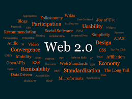

Web 2.0 is the second era of the internet, emerging around 2004 and still dominant today. It transformed the web from a read-only experience into a read-write, interactive platform. Users moved from being passive consumers to active creators — posting content, leaving comments, sharing files, and connecting socially.
Web 2.0 gave rise to platforms like YouTube, Facebook, Twitter, Wikipedia, and Instagram. It introduced dynamic websites, cloud computing, and mobile apps. The downside of Web 2.0 is that a small number of large corporations — like Google, Meta, and Amazon — ended up controlling most of the data and power on the internet.
💡 Did you know? The term "Web 2.0" was popularized by
Tim O'Reilly in 2004. You are currently using a Web 2.0
application right now!